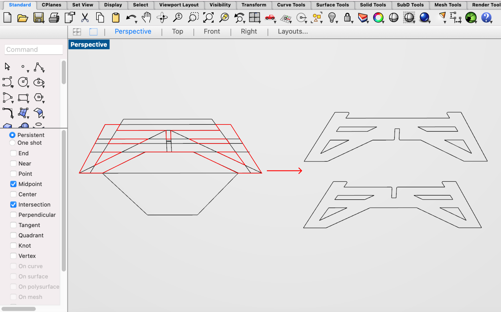
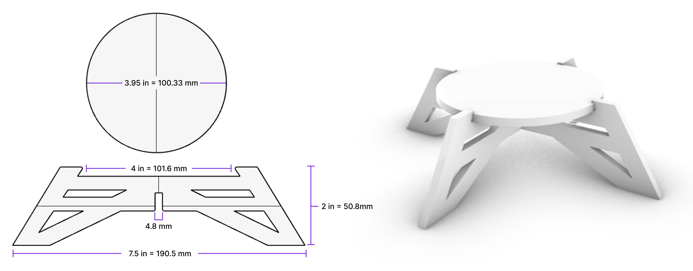
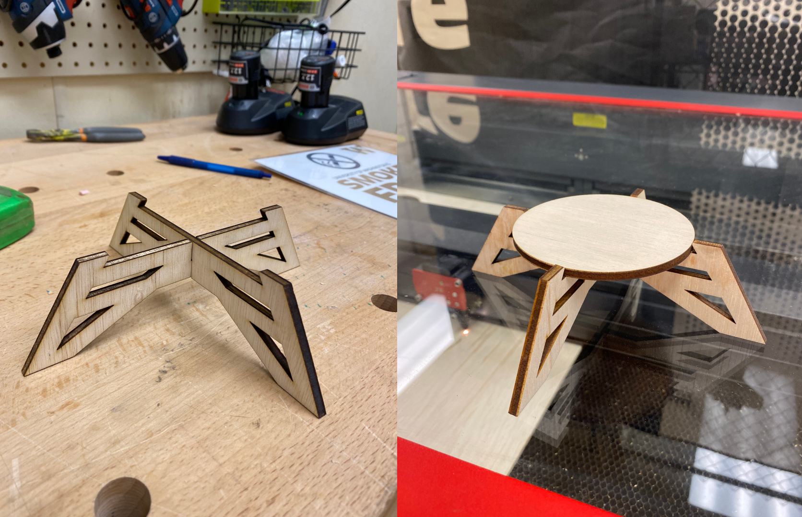
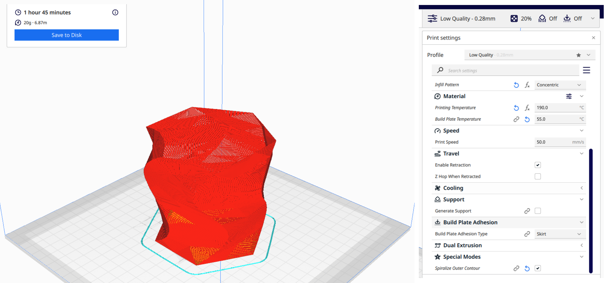
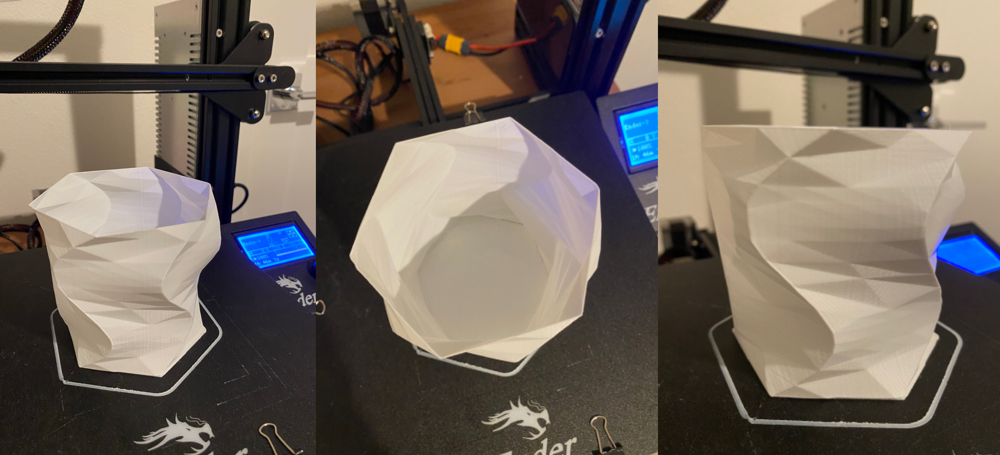
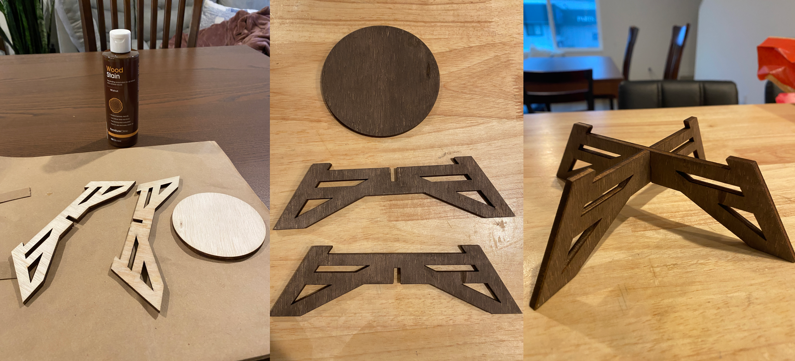
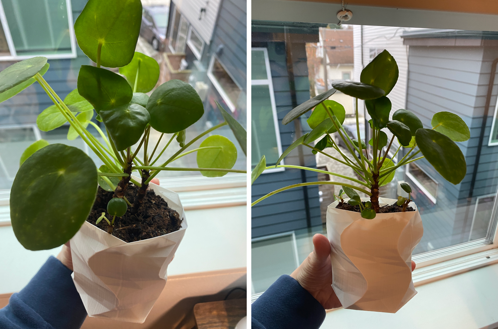

A8: Final Project!
Dec. 6, 2022For the final project, I designed a planter and plant stand.

Designing the Plant Stand
I researched styles of the plant stand that I wanted to design. I took a lot of inspiration from Etsy. Upon browsing Etsy, I found this plant stand.

Laser Cutting
I exported the Rhino file as an .ai file and imported it into Adobe Illustrator. My birch hardwood was 24" x 24" which perfectly fit into the laser cutter machine. (Shoutout to the Lowe's employee for cutting my hardwood in half!). Since I only had 3 pieces to cut out, it was pretty easy to arrange them on the laser cutting layout in Illustrator.


On the laser cutter, I used the following settings:
- Speed: 5
- Power: 100
- PPI: 300
Designing the Planter
3D Printing

Assembly

Acknowledgement
Thank you to the Lowes worker for cutting the plywood down so it could fit in the laser cutting machine. Also thank you to the couple of undergrads who were working on their airplane project at the 8... they helped me troubleshoot why the machine wouldn't start cutting :'^)
Source Files
Planter - Rhino (.3dm)Planter - Cura (.stl)
---
Plant Stand - Rhino (.3dm)
Planter - Adobe Illustrator (.ai)
Return to Main